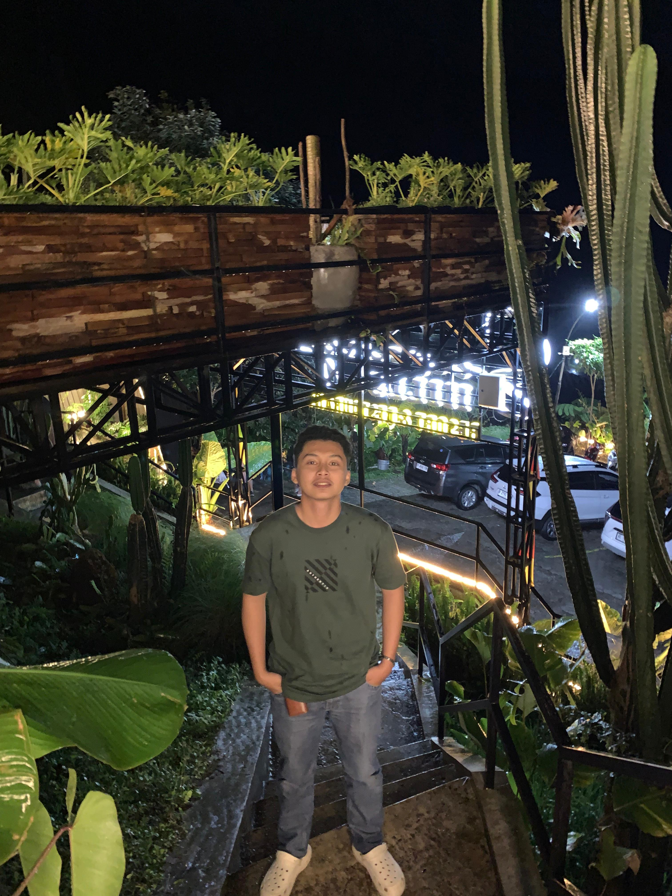

Pengalaman



Website Portofolio Pribadi
Website ini sendiri merupakan salah satu kemampuan front-end saya.
Lihat DetailInformatic System
Saya Rizki Cahya Putra, mahasiswa aktif berusia 20 tahun dari Program Studi Sistem Informasi Universitas Negeri Semarang. Lulusan Madrasah Aliyah Nahdlatul Ulama Taswiquth Thullab Salafiyah Kudus, saya tumbuh dalam lingkungan disiplin yang membentuk karakter saya menjadi pribadi yang bertanggung jawab, tekun, dan berintegritas. Pengalaman akademik dan organisasi telah memperkuat kemampuan saya dalam bekerja sama dalam tim, berpikir kritis, serta berkomunikasi secara efektif. Saya memiliki minat besar dalam pengembangan teknologi informasi dan siap memberikan kontribusi terbaik dalam lingkungan kerja yang dinamis. Dengan kombinasi soft skill yang kuat dan semangat belajar yang tinggi, saya percaya dapat menjadi bagian berharga dalam setiap tim dan proyek yang saya ikuti.
Website ini sendiri merupakan salah satu kemampuan front-end saya.
Lihat Detail